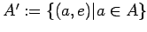

Inhalt Index DeskTop Bronstein

 Algebra und Diskrete Mathematik Klassische algebraische Strukturen Gruppen Untergruppen und direkte Produkte
Algebra und Diskrete Mathematik Klassische algebraische Strukturen Gruppen Untergruppen und direkte Produkte


| (5.101a) |
Damit wird A x B zu einer Gruppe, die das direkte Produkt von A und B genannt wird.
Mit (e,e) wird das Einselement von A x B bezeichnet, und (a-1,b-1) ist das inverse Element zu .
Für endliche Gruppen A,B gilt
| (5.101b) |
Die Gruppen  bzw. sind zu A bzw. B isomorphe Normalteiler von
Das direkte Produkt ABELscher Gruppen ist wieder abelsch.
Für zyklische Gruppen gilt: Das direkte Produkt zweier zyklischer Gruppen A, B ist genau dann zyklisch, wenn der größte gemeinsame Teiler der Gruppenordnungen gleich 1 ist.
| Beispiel A |
|
Mit Z2={e,a} und Z3={e,b,b2} wird Z2 x Z3={(e,e),(e,b),(e,b2),(a,e),(a,b),(a,b2)} eine zu Z6 isomorphe Gruppe, die u.a. von (a,b) erzeugt wird. |
| Beispiel B |
|
Andererseits ist Z2 x Z2={(e,e),(e,b),(a,e),(a,b)} nicht zyklisch. Diese Gruppe der Ordnung 4 wird auch KLEINsche Vierergruppe genannt und beschreibt die Deckabbildungen eines Rechtecks. |